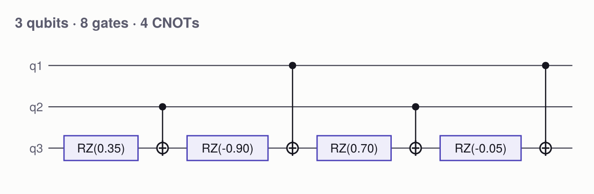
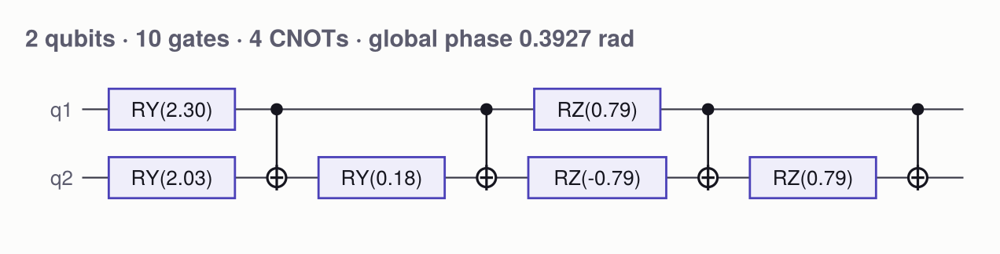
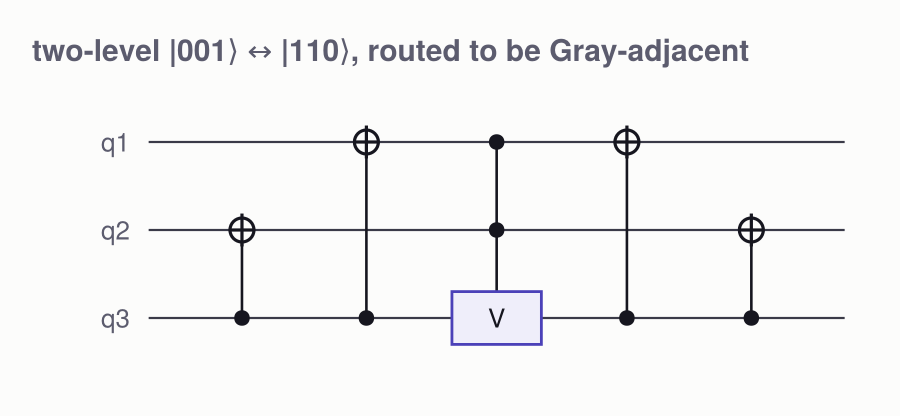
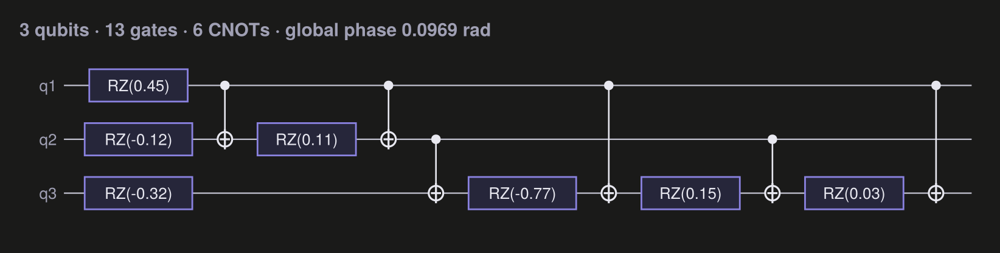
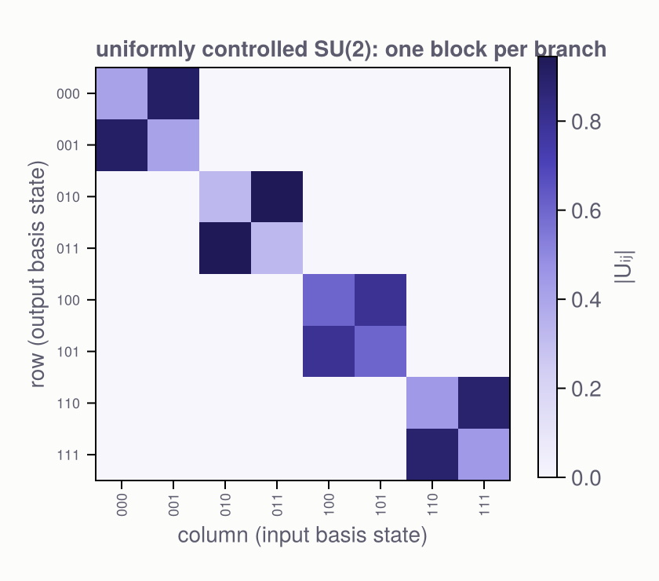
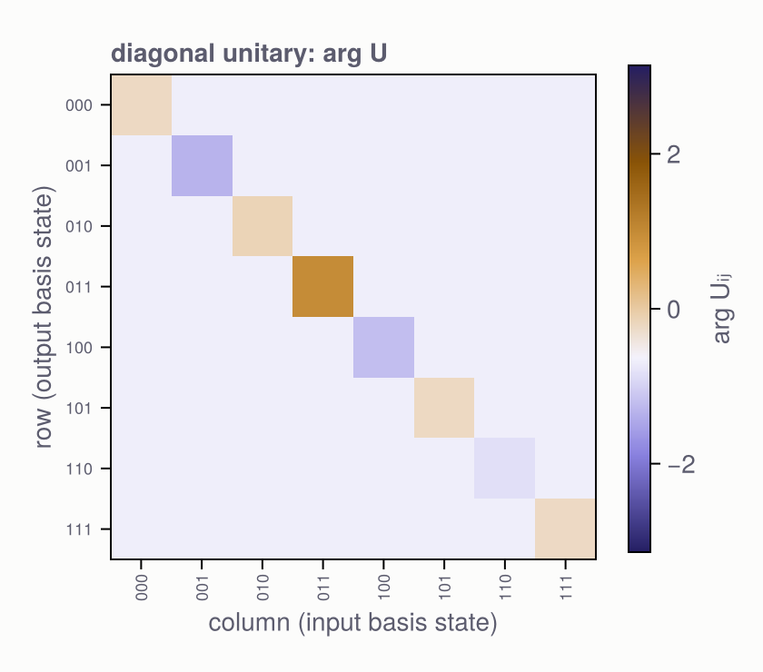
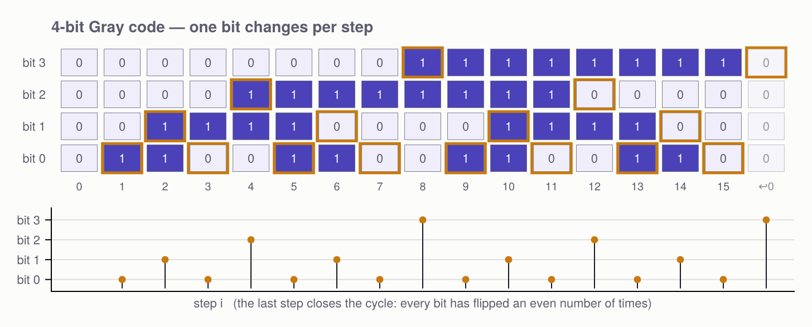
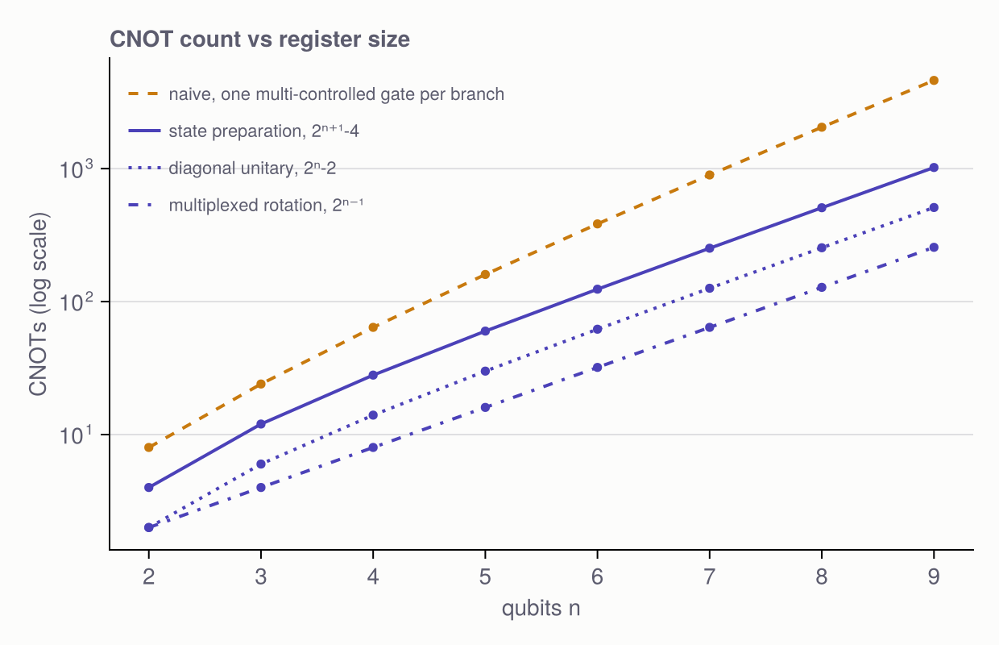

Illustrations
Plotting is a package extension: it loads automatically the moment a Makie backend is available, and costs nothing when it is not.
using Pkg; Pkg.add("CairoMakie")
using CairoMakie, QuantumCircuits # the extension loads hereCairoMakie gives vector output — save("circuit.pdf", fig) produces a figure you can drop into a paper. GLMakie works too if you want an interactive window.
Every figure takes theme = :light (default) or :dark, and a scale multiplier.
Circuit diagrams
circuitfigure packs instructions into columns greedily — gates on disjoint wires share a column, the way you would draw it by hand.
circuitfigure(multiplexed_rz([0.1, 0.5, -1.2, 2.0], [1, 2], 3))
Read the CNOT controls left to right: q2, q1, q2, q1 — the Gray flip sequence for two controls, with the last step closing the cycle so the control register comes out untouched.
State preparation, both passes visible — the RY cascade distributing magnitude down the amplitude tree, then the diagonal stamping on phases:
circuitfigure(prepare_state([1, 2, 3im, 4]))
Multi-controlled gates and Gray-code routing, from the two-level decomposition:
c = Circuit(3)
two_level!(c, TwoLevel(1, 6, randu(2)), 3)
circuitfigure(c; title = "two-level |001⟩ ↔ |110⟩, routed to be Gray-adjacent")
The two CNOTs on each side are the routing: they bring |001⟩ and |110⟩ — three bits apart — to a pair differing in one bit, so a single controlled V suffices.
Dark theme:
circuitfigure(diagonal(randn(8)); theme = :dark)
To compose several circuits into one figure, use circuitplot! with your own axes.
Matrix structure
matrixfigure shows what a decomposition is actually building. part selects the quantity and the kind of colour scale it deserves: magnitude on a single-hue sequential ramp, signed parts on a diverging ramp with a neutral midpoint, and phase on a cyclic ramp — because phase wraps, so its colour must wrap too.
A uniformly controlled one-qubit gate is block diagonal, one 2 × 2 block per control state:
U = matrix(multiplexed_1q([randu(2) for _ in 1:4], [1, 2], 3))
matrixfigure(U; part = :abs, title = "uniformly controlled SU(2): one block per branch")
A diagonal unitary keeps all its information in the phase:
matrixfigure(matrix(diagonal(randn(8))); part = :phase, title = "diagonal unitary: arg U")
The Gray code itself
graycodefigure draws the walk: the bit grid over all 2ⁿ steps with the changed bit ringed, and the flip-position sequence — trailing_zeros(i) — beneath it.
graycodefigure(4)
The bottom panel is the CNOT schedule of a four-control multiplexor read directly: bit 0 flips on every other step, bit 3 only twice, and step 16 closes the cycle.
Cost
costfigure(2:9)
Reference
QuantumCircuits.circuitfigure — Function
circuitfigure(c; kwargs...) -> FigureDraw a circuit as a publication-quality diagram.
Instructions are packed into columns greedily, so gates on disjoint wires share a column the way a hand-drawn diagram would. Keyword arguments:
title— figure title (default: a gate/CNOT count summary)theme—:light(default) or:darkwirelabels—trueto label the wiresq1 … qngatecolor,wirecolor,accent— override individual coloursscale— overall size multiplier
requires a Makie backend. Run
using Pkg; Pkg.add("CairoMakie") # once
using CairoMakie # loads the QuantumCircuits plotting extensionCairoMakie renders publication-quality vector output (save("fig.pdf", fig)); GLMakie or WGLMakie work too if you want an interactive window.
QuantumCircuits.circuitplot! — Function
circuitplot!(ax, c; kwargs...) -> axDraw a circuit into an existing Makie.Axis, for composing several circuits into one figure. Same keywords as circuitfigure.
requires a Makie backend. Run
using Pkg; Pkg.add("CairoMakie") # once
using CairoMakie # loads the QuantumCircuits plotting extensionCairoMakie renders publication-quality vector output (save("fig.pdf", fig)); GLMakie or WGLMakie work too if you want an interactive window.
QuantumCircuits.matrixfigure — Function
matrixfigure(U; part=:abs, kwargs...) -> FigureHeatmap of a matrix (or of matrix(c) for a circuit), with a colourbar.
part selects what is shown and, with it, the kind of colour scale:
:abs— magnitude, on a single-hue sequential ramp (light → dark);:real,:imag— signed, on a diverging ramp with a neutral grey midpoint;:phase— the argument, on a cyclic ramp (phase wraps, so the colour must wrap with it), masked to entries whose magnitude clearsatol.
Block structure is the point: a multiplexor is block-diagonal, a diagonal unitary is a single diagonal line, and a permutation is a scatter of ones.
requires a Makie backend. Run
using Pkg; Pkg.add("CairoMakie") # once
using CairoMakie # loads the QuantumCircuits plotting extensionCairoMakie renders publication-quality vector output (save("fig.pdf", fig)); GLMakie or WGLMakie work too if you want an interactive window.
QuantumCircuits.graycodefigure — Function
graycodefigure(n; kwargs...) -> FigureIllustrate the n-bit Gray code: the bit grid over the whole walk, with the bit that changes at each step highlighted, and the flip-position sequence beneath it.
requires a Makie backend. Run
using Pkg; Pkg.add("CairoMakie") # once
using CairoMakie # loads the QuantumCircuits plotting extensionCairoMakie renders publication-quality vector output (save("fig.pdf", fig)); GLMakie or WGLMakie work too if you want an interactive window.
QuantumCircuits.costfigure — Function
costfigure(ns=1:8; kwargs...) -> FigureCNOT count versus register size for the package's decompositions against the naive O(n 2ⁿ) compilation, on a log scale.
requires a Makie backend. Run
using Pkg; Pkg.add("CairoMakie") # once
using CairoMakie # loads the QuantumCircuits plotting extensionCairoMakie renders publication-quality vector output (save("fig.pdf", fig)); GLMakie or WGLMakie work too if you want an interactive window.